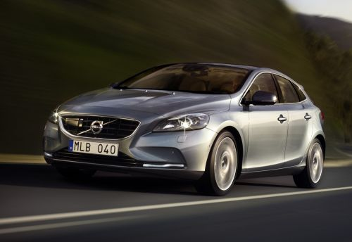
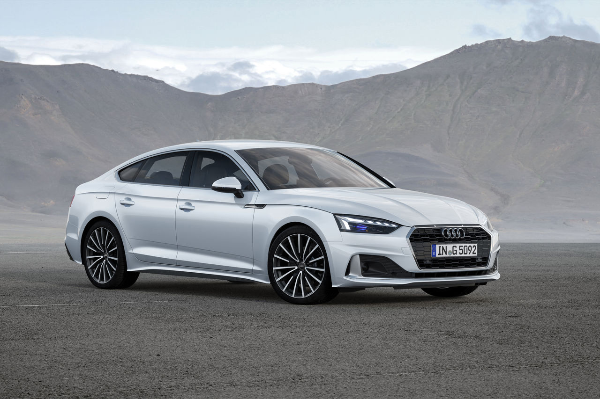
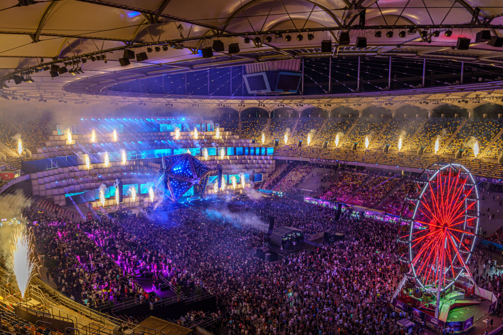
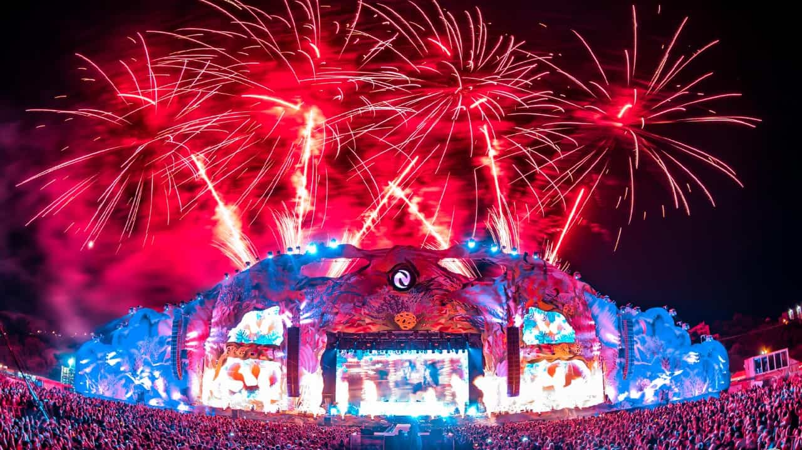

Una dintre marile mele pasiuni sunt masinile. Imi place foarte mult sa conduc, dar si sa inteleg o masina dincolo de utilitatea ei zilnica: aceea ne a ne transporta in siguranta dintr-un punct in altul. Imi place sa inteleg partea mecanica a lor si toate tehnologiile care le ajuta sa functioneze, cat si metodele de implementare a lor.


De asemenea, sunt pasionat de festivaluri de muzica electronica si, in fiecare an, astept cu nerabdare sa particip la ele si sa ma distrez alaturi de prietenii mei. Entuziasmul reiese din faptul ca sunt printre primele persoane care isi iau bilet si asteapta un an intreg pentru urmatoarea editie cu sufletul la gura.
